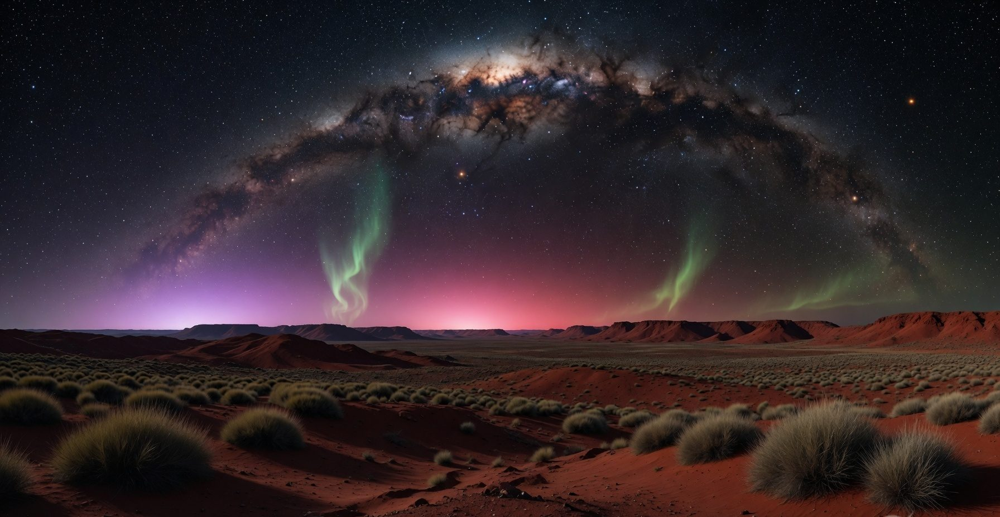
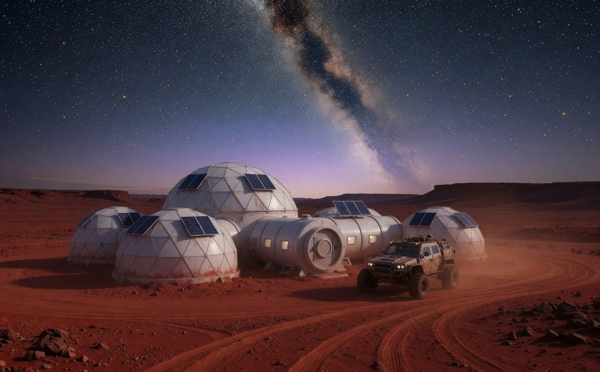
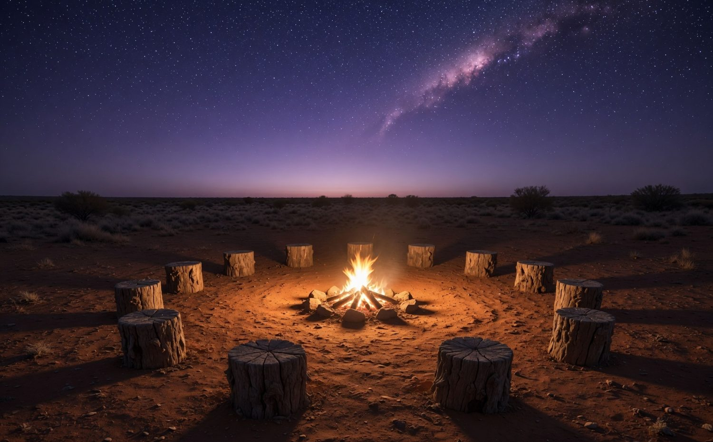
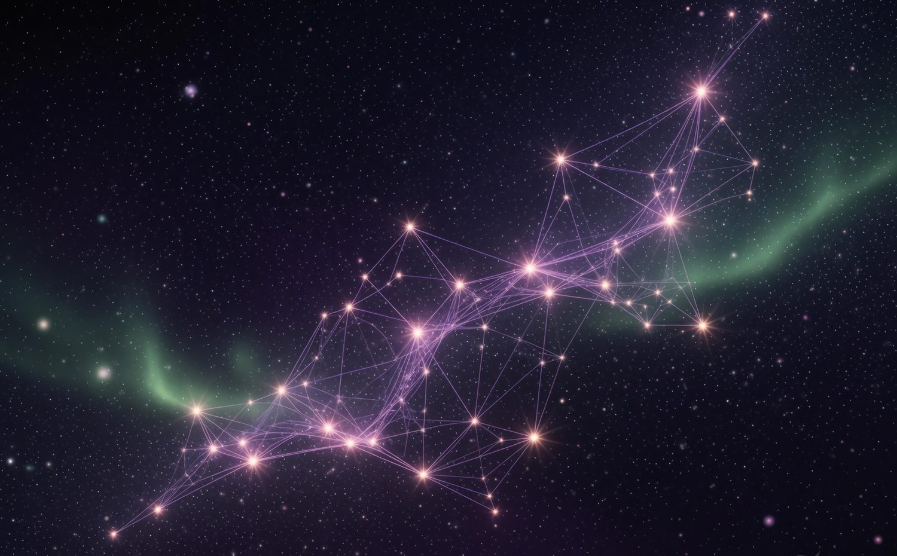
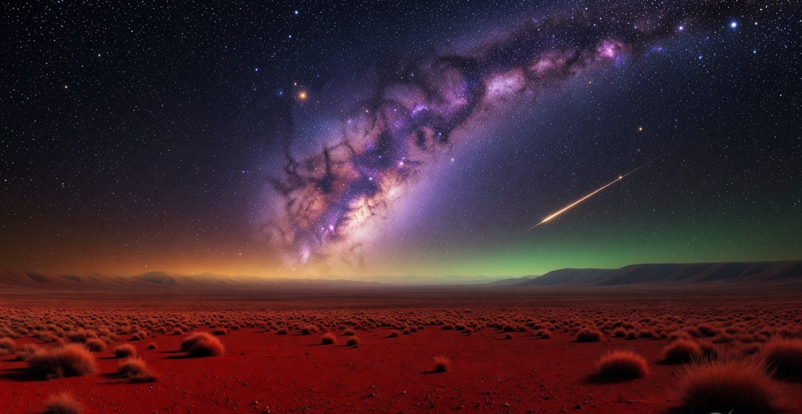

"Fermi's Silent Line"
The universe is quiet — so we reach out anyway. The silence isn't an ending; it's an invitation to be the ones who answer it from the southern sky.
This is my drawing board — the concepts, art, music and writing behind TerAustralis Incognita. Much of it is engineered with AI as a creative collaborator: concept art with Grok, songs with Suno, and this very site built alongside Claude.
These are evolving ideas and a personal perspective — works in progress, not finished commitments. Watch this space grow.
AI-generated concept art exploring the world of TerAustralis — from red dust to deep space. A growing gallery.





Original songs written for this vision, created with Suno. The first is the centrepiece of the Starlines story.
A song about the great cosmic silence — the Arecibo message reaching out toward Messier 13, and the question Fermi's paradox asks. Created with Suno.
More songs are on the way. The music that inspired this vision lives in the Starlines playlist.
See the Starlines playlist →I'm a singer, and I hear ideas in music — these are my own reflections on where a song can lead. One person's perspective, offered openly.
The universe is quiet — so we reach out anyway. The silence isn't an ending; it's an invitation to be the ones who answer it from the southern sky.
A space for the next song and the idea it sparks. (Tell me the song and the thought, and I'll add it here.)
Op-eds, stories and pieces about this vision. Send me the links and titles and I'll list them here.
Add the title and link to your published SpaceNews piece.
A placeholder for an article or story — ready when you are.
A short story or reflection — send it over and I'll add it.
A note on tools. Much of what's on this page is engineered with AI as a creative collaborator — concept art with Grok, music with Suno, and this website built with Claude. The ideas, direction and perspective are my own.